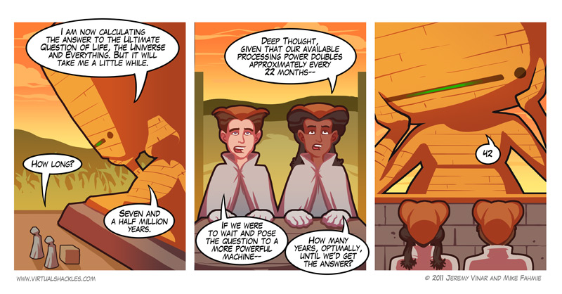
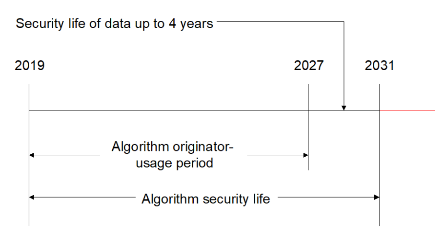
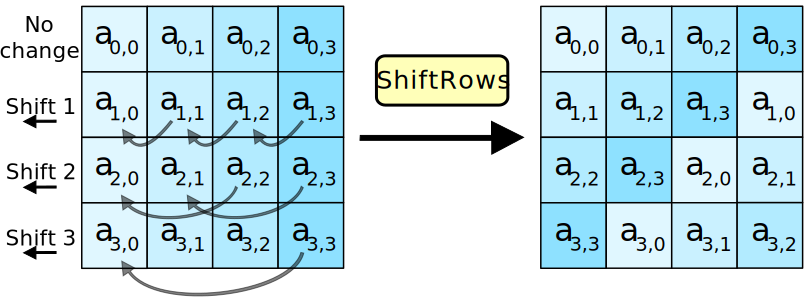
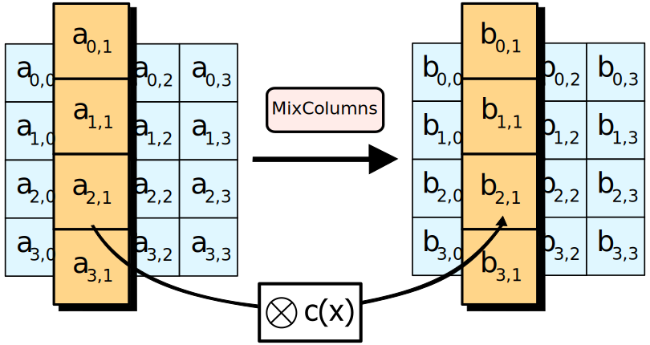

Previous slide Next slide Toggle fullscreen Open presenter view
Como decíamos ayer...
Sabemos conseguir confidencialidad perfecta que nadie puede descifrar (tema 2)
Pero implica claves de un solo uso tan grandes como el mensaje: ∥ k ∥ = ∥ m ∥ \|k\|=\|m\| ∥ k ∥ = ∥ m ∥
Hasta los '70 la criptografía o era "muy imperfecta" o no era "práctica". A partir de 1976:
Criptografía simétrica : es "casi perfecta" con claves cortasCriptografía asimétrica : distribución de claves de cualquier tamaño
Más ejemplos: https://www.cryptomuseum.com/covert/conceal/index.htm
Confidencialidad computacional
Confidencialidad computacional
Confidencialidad computacional
Relajando la perfección
Confidencialidad perfecta : a partir del texto cifrado no es posible deducir ninguna propiedad del texto en claro aunque el atacante tenga capacidad computacional infinita Confidencialidad computacional : a partir del texto cifrado no es posible deducir ninguna propiedad del texto en claro aunque el atacante tenga capacidad computacional razonable
Imagen: Nitin Jain, Birgit Stiller, Imran Khan, Dominique Elser, Christoph Marquardt & Gerd Leuchs (2016) "Attacks on practical quantum key distribution systems (and how to prevent them)". DOI: 10.1080/00107514.2016.1148333
Confidencialidad computacional
Seguridad computacional : un sistema es seguro computacionalmente si cualquier algoritmo probabilístico en tiempo polinomial solo puede romper el algoritmo con probabilidad negligible en ∥ n ∥ \|n\| ∥ n ∥
Informalmente: un atacante no puede descifrar el mensaje:
en un tiempo razonable
con la tecnología actual
...probablemente
Con la seguridad computacional hay que definir el objetivo: "quiero un sistema criptográfico que mantenga este mensaje secreto durante los próximos 100 años"
Confidencialidad computacional
Ataques de fuerza bruta
La criptografía computacionalmente segura permite ∥ k ∥ ≪ ∥ m ∥ \|k\| \ll \|m\| ∥ k ∥ ≪ ∥ m ∥
Es un cifrado práctico: la clave es mucho más pequeña que el mensaje y por tanto es fácil de distribuir
Pero si es muy pequeña, es posible hacer fuerza bruta
Hay que usar un espacio de claves lo suficientemente grande como para que no sea posible hacer fuerza bruta hoy en día , y lo suficientemente pequeño como para que sea práctico
Confidencialidad computacional
podemos probar 1 0 6 10^6 1 0 6 ≈ 2 20 \approx 2^{20} ≈ 2 20
ó 1 0 13 10^{13} 1 0 13 ≈ 2 43 \approx 2^{43} ≈ 2 43
ó 1 0 16 10^{16} 1 0 16 1000 1000 1000 ≈ 2 53 \approx 2^{53} ≈ 2 53
ó 1 0 19 10^{19} 1 0 19 1 0 6 10^6 1 0 6 ≈ 2 63 \approx 2^{63} ≈ 2 63
ó 1 0 25 10^{25} 1 0 25 1 0 6 10^6 1 0 6 ≈ 2 83 \approx 2^{83} ≈ 2 83
ó 1 0 29 10^{29} 1 0 29 1 0 6 10^6 1 0 6 ≈ 2 96 \approx 2^{96} ≈ 2 96
Si tengo una "suerte media" sólo nos hará falta la mitad de las pruebas
Con hardware ad-hoc podemos llegar a multiplicar por 1 0 4 10^4 1 0 4 1 0 5 10^5 1 0 5 2 13 2^{13} 2 13 2 17 2^{17} 2 17
Fortaleza de un sistema criptográfico: número de claves que hay que probar por fuerza bruta (en bits)
Confidencialidad computacional

Confidencialidad computacional
Tamaños recomendados de clave
El NIST recomienda (2020, sección 5.6.3) claves en las que un atacante2 112 2^{112} 2 112
Es decir, según el NIST antes de 2030 las claves han de tener una longitud mínima de ∥ k ∥ = 112 \|k\|=112 ∥ k ∥ = 112
A partir del 2030 prevé recomendar ∥ k ∥ = 128 \|k\|=128 ∥ k ∥ = 128
Es decir: con una clave de 128 bits podemos cifrar un mensaje de cualquier longitud , y es razonable que nadie pueda descifrarlo en un futuro previsible
En cifrado simétrico, el tamaño en bits de su clave es igual a la fortaleza del sistema
Otras recomendaciones: https://www.keylength.com/en/compare/
Confidencialidad computacional
NIST: The most important approach is to be flexible; the use of implementations and applications that can most easily be adapted to the cryptographic security offerings and a plan for transitioning to them offer the best solution

La amenaza conocida que puede modificar el calendario es la computación cuántica
Confidencialidad computacional
Rompiendo algoritmos
Recuerda: definimos un que un algoritmo está criptográficamente roto si se conoce un ataque más eficiente que la fuerza bruta
Para la criptografía simétrica, buscaremos algoritmos computacionalmente seguros y que no estén rotos
Cuando la comunidad criptográfica rompe un algoritmo, se sustituye por otro
... pero es mejor prevenir: los algoritmos caducan y se cambian antes de que estén rotos
Confidencialidad computacional
Criptografía simétrica: tipos
Cifrado de flujo . Heredero de "la idea" one-time-pad : el mensaje llega como un flujo de bytes que se cifra según va llegando.Cifrado de bloque . Heredero de "la tradición" Vigenère: el mensaje se divide en bloques que se cifran por separado
Confidencialidad computacional
Flujo
Bloque
Más rápido
Más lento (a menos que exista ayuda del hardware)
Fácil de programar: pequeños dispositivos
Más complejo
Implementado en hardware
Implementado en software
RC4, ChaCha20
3DES, AES
Es una implementación práctica de los bloques de una solo uso (one-time-pad )
Recuerda: con one-time-pad necesitábamos una clave tan larga como el mensaje
∥ k ∥ = ∥ m ∥ \|k\|=\|m\|
∥ k ∥ = ∥ m ∥
Para después hacer:
c = e ( k , m ) = k ⊗ m c=e(k,m) = k \otimes m
c = e ( k , m ) = k ⊗ m
En cifrado de flujo lo que haremos es generar una k generada k_{\text{generada}} k generada
∥ k generada ∥ = ∥ m ∥ \|k_{\text{generada}}\| = \|m\| ∥ k generada ∥ = ∥ m ∥
...a partir de una clave k k k
k ⟶ P R N G k generada k \overset{PRNG}{\longrightarrow} k_{\text{generada}} k ⟶ PRNG k generada
para después hacer:
c = k generada ⊕ m c = k_{\text{generada}} \oplus m c = k generada ⊕ m
Cifrado de flujo: algoritmo
Generadores de números aleatorios
La función PRNG (Pseudo Random Number Generator ) es un generador de bits que tiene como entrada una semilla (que será la clave de cifrado k k k XOR
La velocidad del cifrado depende totalmente de la velocidad del PRNG, porque el XOR es instantáneo
Un PRNG es un algoritmo determinista que extiende una semilla realmente aleatoria, resultando en una secuencia que parece ser uniformemente aleatoria.
Definición formal:
PRNG : Dado G G G s ∈ { 0 , 1 } n s \in \{0,1\}^n s ∈ { 0 , 1 } n G ( s ) ∈ { 0 , 1 } l ( n ) G(s) \in \{0,1\}^{l(n)} G ( s ) ∈ { 0 , 1 } l ( n ) l ( ) l() l ( ) l ( n ) > n l(n) > n l ( n ) > n n ∈ N n \in \N n ∈ N G G G
PRNG: seguridad
Una función PRNG es realmente PRNG (es decir, útil en criptografía) si ningún atacante puede distingir entre las secuencia generada y una fuente aleatoria aleatoria uniforme RNG con una probabilidad diferente de 0.5 0.5 0.5
Fuente aleatorio uniforme RNG: medios físicos, no algorítmicos. Por ejemplo, generadores cuánticos . Encontrarás más información en el Anexo 2
Información adicional: https://www.incibe-cert.es/blog/comprobando-aleatoriedad
Distribución uniforme: debe tender a tener el mismo número de 1's que de 0's, tender al mismo número de 00's, que de 01's, 10's...
Despúes de n n n n + 1 n+1 n + 1
Con la semilla (la clave), la secuencia queda determinada en su totalidad, que es lo que nos interesa.
La seguridad del cifrado depende del generador PRNG utilizado...
...y de que nunca se envíen dos mensajes cifrados con la misma clave
(vamos a repetir esto muchas veces en el curso)
Lorenz SZ fue una máquina alemana de cifrado de flujo, rota porque un operador envió dos mensajes diferentes seguidos sin cambiar la clave.
Intento 1
Supongamos que tenemos una función PRNG, y usamos una clave k como semilla del PRNG para cifrar un flujo de datos en una conexión
Si ciframos dos mensajes cifrados c 1 c_1 c 1 c 2 c_2 c 2
c 1 ⊕ c 2 = ( k g ⊕ m 1 ) ⊕ ( k g ⊕ m 2 ) = k g ⊕ m 1 ⊕ k g ⊕ m 2 = k g ⊕ k g ⊕ m 1 ⊕ m 2 = ( k g ⊕ k g ) ⊕ ( m 1 ⊕ m 2 ) = ( { 000 ⋯ 000 } ) ⊕ ( m 1 ⊕ m 2 ) = m 1 ⊕ m 2 \begin{aligned}
c_1 \oplus c_2 &= (k_{\text{g}} \oplus m_1) \oplus (k_{\text{g}} \oplus m_2) \\
&= k_{\text{g}} \oplus m_1 \oplus k_{\text{g}} \oplus m_2 \\
&= k_{\text{g}} \oplus k_{\text{g}} \oplus m_1 \oplus m_2 \\
&= (k_{\text{g}} \oplus k_{\text{g}}) \oplus (m_1 \oplus m_2) \\
&= (\{000\cdots000\}) \oplus (m_1 \oplus m_2) \\
&= m_1 \oplus m_2
\end{aligned}
c 1 ⊕ c 2 = ( k g ⊕ m 1 ) ⊕ ( k g ⊕ m 2 ) = k g ⊕ m 1 ⊕ k g ⊕ m 2 = k g ⊕ k g ⊕ m 1 ⊕ m 2 = ( k g ⊕ k g ) ⊕ ( m 1 ⊕ m 2 ) = ({ 000 ⋯ 000 }) ⊕ ( m 1 ⊕ m 2 ) = m 1 ⊕ m 2
¡Un atacante puede hacer XOR de los dos textos cifrados y obtener el XOR de los textos en claro!
Nunca hay que usar la misma clave (ni generada) con dos mensajes diferentes
Información adicional: Chosen plaintext attacks
Intento 2
Cambiamos la clave (la semilla del PRNG) en cada transmisión
Esto es correcto pero costoso, y volvemos a los problemas de la confidencilidad perfecta: cómo distribuimos una clave diferente para cada mensaje
Intento 3
Generar variaciones de las claves en cada transmisión
Supongamos que la semilla no es directamente la clave, sino una función de la clave y otro parámetro r r r
k g e n e r a d a = P R N G ( f ( k , r ) ) k_{generada} = PRNG(f(k, r)) k g e n er a d a = PRNG ( f ( k , r ))
Y r r r c ′ = c ∥ r c' = c \| r c ′ = c ∥ r
Ahora la semilla "es diferente" con cada tranmisión
Pero tenemos que asumir que un atacante conoce r r r
Nonce : number used only once Curiosamente: ¡esto es correcto!
Que el atacante conozca la r r r r r r
Este elemento se conoce como nonce y forma parte de muchos algoritmos criptográficos.
Seguridad de los algoritmos de flujo
Debemos generar un r r r nonce ) diferente para cada mensaje
Si tenemos una comunicación bidireccional como HTTPS (TLS) hace falta:
o bien generar un nonce diferente para cada sentido
o bien generar una clave k k k
o ambas, que es lo mejor
El cifrado de flujo es tan seguro como:
La corrección de la hipótesis de que la función PRNG sea realmente PRNG
El espacio de claves (de semillas) sea tan grande que sea improbable que un ataque de fuerza bruta sea factible
Que se cumplan las hipótesis de uso:
clave diferente en cada comunicación
nonce y k k k
Ejemplos
RC4 (histórico): obsoleto
ChaCha: derivado del Salsa20 y probablemente la única alternativa al AES en TLS 1.3
∥ k ∥ = 256 b i t s \|k\|=256\ bits ∥ k ∥ = 256 bi t s ∥ n o n c e ∥ = 64 b i t s \|nonce\|=64\ bits ∥ n o n ce ∥ = 64 bi t s
RC4
Un comentario rápido sobre RC4/ARC4/RCFOUR :
Ron Rivest de RSA en 1987 (volveremos a hablar de Ron Rivest y de RSA)
Secreto comercial hasta 1994
Muy rápido y simple de implementar
Muy utilizado hasta 2015: WEP, WPA, SSL, TLS...
Claves de 40 a 2048 bits
Hoy en día considerado roto y no se recomienda su uso.
ChaCha20: características
Basado en Salsa20 (2017) , de Daniel J. Bernstein
ChaCha20 (RFC 8439, 2018) , es la variante estandarizada
Cifrado simétrico de flujos de bytes. Claves de 256 bits.
Sustituto "de facto" para el antes ubicuo RC4. Se usa en:
TLS (en Android) ya que es más rápido que AES en hardware no especializado
El /dev/urandom de Linux
Varias VPNs
Cifrado con Python
import json
from base64 import b64encode
from Crypto.Cipher import ChaCha20
from Crypto.Random import get_random_bytes
plaintext = b'Attack at dawn'
key = get_random_bytes(32 )
cipher = ChaCha20.new(key=key)
nonce = b64encode(cipher.nonce).decode('utf-8' )
ciphertext = cipher.encrypt(plaintext)
ct = b64encode(ciphertext).decode('utf-8' )
result = json.dumps({'nonce' :nonce, 'ciphertext' :ct})
{"nonce" : "IZScZh28fDo=" , "ciphertext" : "ZatgU1f30WDHriaN8ts=" }
Descifrado con Python
nonce = b64decode(received['nonce' ])
ciphertext = b64decode(received['ciphertext' ])
cipher = ChaCha20.new(key=key, nonce=nonce)
plaintext = cipher.decrypt(ciphertext)
print ("The message was " + plaintext)
Estado inicial
.
.
.
.
"expa"
"nd 3"
"2-by"
"te k"
Key
Key
Key
Key
Key
Key
Key
Key
Pos.
Pos.
Nonce
Nonce
Matriz 4x4 de 16 palabras de 32 bits
Key : 256 bitsPos : contador de 0 hasta 2 64 2^{64} 2 64 Nonce : valor aleatorio de 64 bits (en la RFC, 96 bits)"expand 32-byte k" = 0x657870616e642033322d62797465206b es un número "no llevo nada en la manga "
Función quarter round QR
Aplicada sobre 4 palabras de 32 bits, las difunde:
QR(a, b, c, d)
a += b; d ^= a; d <<<= 16;
c += d; b ^= c; b <<<= 12;
a += b; d ^= a; d <<<= 8;
c += d; b ^= c; b <<<= 7;
Solo tiene sumas, rotaciones y XOR: es una función ARX , que impide ataques de canal lateral por timing .
#define ROTL(a,b) (((a) << (b)) | ((a) > > (32 - (b))))
#define QR(a, b, c, d) ( \
a += b, d ^= a, d = ROTL(d,16), \
c += d, b ^= c, b = ROTL(b,12), \
a += b, d ^= a, d = ROTL(d, 8), \
c += d, b ^= c, b = ROTL(b, 7))
#define ROUNDS 20
void chacha_block (uint32_t out[16 ], uint32_t const in[16 ])
int i;
uint32_t x[16 ];
for (i = 0 ; i < 16 ; ++i)
x[i] = in[i];
for (i = 0 ; i < ROUNDS; i += 2 ) {
QR(x[0 ], x[4 ], x[ 8 ], x[12 ]);
QR(x[1 ], x[5 ], x[ 9 ], x[13 ]);
QR(x[2 ], x[6 ], x[10 ], x[14 ]);
QR(x[3 ], x[7 ], x[11 ], x[15 ]);
QR(x[0 ], x[5 ], x[10 ], x[15 ]);
QR(x[1 ], x[6 ], x[11 ], x[12 ]);
QR(x[2 ], x[7 ], x[ 8 ], x[13 ]);
QR(x[3 ], x[4 ], x[ 9 ], x[14 ]);
}
for (i = 0 ; i < 16 ; ++i)
out[i] = x[i] + in[i];
}
Fuente: Wikipedia )
Variantes
... la comunidad aún no está segura de cómo usarlo ...
Nonce length
Description
Max data
If random nonce and same key
8 bytes (default)
The original ChaCha20 designed by Bernstein.
No limitations
Max 200 000 mensajes, el contador limita
12 bytes
The TLS ChaCha20 as defined in RFC7539.
256 GB
Max 13 billions messages
24 bytes
XChaCha20, still in draft stage.
256 GB
No limitations
The Salsa20 family of stream ciphers , Daniel J. Bernstein, 2007
Vulnerabilidades
Ninguna conocida, siempre que se cumplan las condiciones de uso: no se puede repetir clave y nonce.
El cifrado de bloque es lo que hacía el cifrado Vignère: cortar el texto en claro en bloques de la misma longitud de la clave y cifrar cada uno de los bloques
Si tenemos mensajes más largos que n n n n n n
El cifrado de bloque es el más utilizado con el cifrado simétrico: es rápido y no necesita exigentes o lentos algoritmos PRNG.
El cifrado de bloque se suele definir como una serie de permutaciones .
Permutaciones (P)
Una permutación es una función biyectiva de un conjunto sobre sí mismo
X = { a , b , c } f : X → X X = \{ a,b,c \} \\
f : X \rightarrow X
X = { a , b , c } f : X → X
Podemos representar el cifrado de bloque de tamaño n n n f f f
f : X → X f : X\rightarrow X
f : X → X
Donde X X X
La función de descifrado como su inversa f − 1 f^{-1} f − 1
f − 1 : X → X f^{-1} : X\rightarrow X
f − 1 : X → X
Es decir:
c = e ( k , m ) = f ( m ) m = d ( k , c ) = f − 1 ( c ) \begin{aligned}
c &= e(k, m) = f(m) \\
m &= d(k, c) = f^{-1}(c)
\end{aligned}
c m = e ( k , m ) = f ( m ) = d ( k , c ) = f − 1 ( c )
Permutación aleatoria (RP)
La permutación se puede ver como una tabla de 2 n 2^n 2 n n n n
f : X → X f : X\rightarrow X
f : X → X
f : { 0 , 1 } n → { 0 , 1 } n f : \{0,1\}^n\rightarrow \{0,1\}^n
f : { 0 , 1 } n → { 0 , 1 } n
00000000 → 01010011 00000001 → 11000110 00000010 → 01010100 . . . 00000000 \rightarrow 01010011\\
00000001 \rightarrow 11000110\\
00000010 \rightarrow 01010100\\
...
00000000 → 01010011 00000001 → 11000110 00000010 → 01010100 ...
Estas 2 n 2^n 2 n n n n de forma aleatoria de forma que no podremos conocer f f f
En realidad para que el cifrado sea seguro necesitaremos una "familia" de funciones equivalentes pero diferentes. Las indexaremos en función de la clave, k k k
f k : X → X f k : { 0 , 1 } n → { 0 , 1 } n \begin{aligned}
f_k &: X \rightarrow X \\
f_k &: \{0,1\}^n \rightarrow \{0,1\}^n
\end{aligned} f k f k : X → X : { 0 , 1 } n → { 0 , 1 } n
O también, podemos redefinir f f f k k k
f : K × X → X f : { 0 , 1 } ∥ k ∥ × { 0 , 1 } n → { 0 , 1 } n \begin{aligned}
f &: K \times X \rightarrow X \\
f &: \{0,1\}^{\|k\|} \times \{0,1\}^n \rightarrow \{0,1\}^n
\end{aligned} f f : K × X → X : { 0 , 1 } ∥ k ∥ × { 0 , 1 } n → { 0 , 1 } n
donde K K K k k k
Por ejemplo, para DES que tiene un tamaño de bloque de n = 64 n=64 n = 64
hace falta guardar:
64 ⋅ 2 64 b = 2 70 b = 2 67 B = 2 27 T B 64·2^{64} b=2^{70} b=2^{67} B=2^{27} TB
64 ⋅ 2 64 b = 2 70 b = 2 67 B = 2 27 TB
... para cada una de las posibles claves k k k
Obviamente no es factible implementar los cifrados modernos directamente con una tabla indexada.
Permutación pseudoaleatoria (PRP)
Igual que para el cifrado de flujo nos hacía falta un flujo de bits aparentemente aleatorio para quien no tuviera la semilla (la clave k k k
...para cifrado de bloque utilizaremos permutaciones pseudoaleatorias (PRP, Pseudo Random Permutation ) en las que la permutación será aparentemente aleatoria para alguien que no conozca la clave
Esto nos permitirá realizar cifrados de bloque factibles, intercambiando una cantidad inmensa de memoria por una computación abordable
Como en el caso de PRNG, hace falta que las PRP sean indistinguibles de las RP
Además, hace falta que tanto f k f_k f k f ‘ − 1 k f`{−1}_k f ‘ − 1 k
Construcción de cifrados de bloque
Hay dos clases de cifrado de bloque. Es decir, dos maneras de implementar PRP:
cifrado de sustitución: monoalfabéticos y polialfabéticos
cifrados de transposición
Fijate: igual que los cifrados clásicos.
Por si solas, las 2 clases básicas de cifrado de bloque son inseguras pero combinándolas podemos obtener seguridad creciente.
A partir de ahora utilizaremos e ( ) e() e ( ) d ( ) d() d ( ) f f f f − 1 f^{−1} f − 1
Sustitución polialfabética
Para un bloque de longitud t t t t t t
m
c = e ( k , m ) =e(k, m) = e ( k , m )
p o s 1 pos_1 p o s 1 f a ( p o s 1 ) f_a(pos_1) f a ( p o s 1 )
p o s 2 pos_2 p o s 2 f b ( p o s 2 ) f_b(pos_2) f b ( p o s 2 )
p o s 3 pos_3 p o s 3 f c ( p o s 3 ) f_c(pos_3) f c ( p o s 3 )
p o s 4 pos_4 p o s 4 f d ( p o s 4 ) f_d(pos_4) f d ( p o s 4 )
Igual que en Vigenère, podríamos recuperar el texto con análisis frecuencial
Transposición
Para un bloque de longitud t t t
m
c = e ( k , m ) =e(k, m) = e ( k , m )
p o s 1 pos_1 p o s 1 p o s 2 pos_2 p o s 2
p o s 2 pos_2 p o s 2 p o s 4 pos_4 p o s 4
p o s 3 pos_3 p o s 3 p o s 3 pos_3 p o s 3
p o s 4 pos_4 p o s 4 p o s 1 pos_1 p o s 1
No solo la frecuencia de los símbolos de entrada se mantiene, si no que los propios símbolos se mantiene (aunque en posiciones diferentes)
Composición
Si componemos el cifrado total como una serie de n n n
c 1 = e 1 ( k 1 , m ) c 2 = e 2 ( k 2 , c 1 ) . . . c n = e n ( k n , c n − 1 ) \begin{aligned}
c_1 &= e_1(k_1, m)\\
c_2 &= e_2(k_2, c_1)\\
...\\
c_n &= e_n(k_n, c_{n-1})\\
\end{aligned}
c 1 c 2 ... c n = e 1 ( k 1 , m ) = e 2 ( k 2 , c 1 ) = e n ( k n , c n − 1 )
Cada clave k i k_i k i expansión de clave
k → PRNG { k 1 , k 2 , … , k n } k \xrightarrow{\text{PRNG}} \{k_1, k_2, \dotsc, k_n\}
k PRNG { k 1 , k 2 , … , k n }
Substitución : da confusión , que permite dificultar la obtención de la clave a partir del texto cifrado.Transposición : da difusión , que permite difundir las redundancias del texto en claro, de forma que no aparezca en el cifrado.
Etapas o rounds: los cifrados de sustitución y transposición se agrupan en parejas y se aplican varias veces (con diferentes claves) hasta obtener un cifrado seguro
c i = e i ( k i , c i − 1 ) c_i = e_i(k_i, c_{i-1})
c i = e i ( k i , c i − 1 )
El objetivo de la criptografía moderna es maximizar la difusión y la confusión (según Shannon)
Cifrado TES / 3DES
Unas palabras sobre TDES (NIST SP 800-67, 2017)
c = D E S ( k 3 , D E S ′ ( k 2 , D E S ( k 1 , m ) ) ) c = DES(k_3, DES'(k_2, DES(k_1, m)))
c = D ES ( k 3 , D E S ′ ( k 2 , D ES ( k 1 , m )))
DES tiene claves de 56 bits, pero al aplicarlo tres veces subimos la longitud de la clave hasta que alcanzamos una fortaleza válida de 112 bits (nota que no es 3 ∗ 52 3*52 3 ∗ 52 Meet in the middle )
Claves más cortas, y por tanto más débil que AES
Se usa poder aprovechar todo el hardware DES que ya existía desde 1976
Advanced Encryption System (AES)
Desarrollado por Vincent Rijmen y Joan Daemen (aka: Rijndael), que ganaron el concurso celebrado por el NIST para sustituir a DES en 2001.
AES (FIPS 197, 2001) es un cifrado de bloque:
longitud de bloque: 128 bits (16 Bytes)
longitud de clave: 128, 192 ó 256 bits
Algoritmo
Parte de una matriz de estado que se va modificando durante 10, 12 o 14 rondas según sea el tamaño de clave. Inicialmente: la matriz de estado es el texto en claro.
KeyExpansion: se derivan round keys a partir de la clave de cifrado usando el algoritmo AES key schedule . Necesarias: una por etapa, y una más.AddRoundKey: b l o q u e ⊗ k i bloque \otimes k_i b l o q u e ⊗ k i Cada etapa:
SubBytes: sustitución de bytes en función de una tabla fija de 256 entradasShiftRows: transposición de bytes fijaMixColumns: 4 multiplicaciones modulares de 4 Bytes, valores fijosAddRoundKey: b l o q u e ⊗ k i bloque \otimes k_i b l o q u e ⊗ k i k i k_i k i
SubBytes
"sustitución de bytes en función de una tabla fija de 256 entradas"
ShiftRows

"transposición de bytes fija"
MixColumns

"4 multiplicaciones modulares de 4 Byte, valores fijos"
AddRoundKey
"bloque ⊕ k i \text{bloque} \oplus k_{i} bloque ⊕ k i k i k_{i} k i
Expansión de clave
Cada una de las etapas (rounds ) utiliza una subclave k i k_i k i
Cada una de les subclaves k i k_i k i se deriva de la clave k k k
Nota 1: las subclaves se aplican (⊗ \otimes ⊗
Nota 2: hacen falta más etapas en los AES de clave larga para "aplicar" el mayor espacio de claves sobre el mensaje en claro
Vulnerabilidades
La estadística del mensaje en claro aparece en el texto cifrado.
Ahora los bloques son de 16 B, no de 1 B por tanto la estadística es menos importante2 128 2^{128} 2 128
Un cifrado debe parecerse a esto:
Modos de operación
Esta "vulnerabilidad" es una propiedad de todos los cifrados de bloque
La contramedida es la misma para todos: no cifrar nunca bloque a bloque, sino cifrar parte del bloque anterior en el bloque actual.
Este encadenamiento se denomina modo de operación y no es opcional
Si acumulamos estado durante el cifrado, podemos utilizar este estado sobre el cifrado del siguiente bloque:
ECB : Electronic Code-Book ,
CBC : Cipher Block Chaining
el bloque i − 1 i−1 i − 1 ⊗ \otimes ⊗ i i i
OFB : Output Feedback
cifras el cifrado anterior, y el resultado ⊗ \otimes ⊗
CTR : Counter
cifras un contador, y el resultado ⊗ \otimes ⊗
ECB: Electronic Code-Book
Fallo obvio: está usando la misma clave para cifrar mensajes diferentes.
Eso nunca se puede hacer.
No se puede usar AES en modo ECB
CBC: Cipher Block Chaining
OFB: Output Feedback
CTR: Counter
Vector de Inicialización (IV)
Los distintos encadenados requieren de una semilla inicial para empezar el encadenado: vector de inicialización (IV), que cumple la misma función que un nonce .
Esto hace que en lugar de transmitir n n n n + 1 n+1 n + 1
IV en CBC: es el hipotético bloque cifrado − 1 −1 − 1
IV en OFB: es el bloque que se cifra constantmente e ( e ( e ( . . . e ( I V ) ) ) ) e(e(e(...e(IV)))) e ( e ( e ( ... e ( I V )))) ⊗ \otimes ⊗
IV en CTR: es el valor inicial del contador que se cifra ECB, y se aplica sobre los bloques en claro (con ⊗ \otimes ⊗
AES_128_CTR es efectivamente un cifrado de flujo, siendo k k k nonce
Vulnerabilidades
Hay distintos ataques que permiten realizar búsquedas de forma más rápida que un ataque de fuerza bruta
AES-128/192/256: recuperación de clave en una quarta parte del tiempo que fuerza bruta. Se pierden 2 bits
AES-192/256: si las claves están relacionadas, complejidad 2 119 2^{119} 2 119
el bloque de 128b limita el uso del cifrado hasta 2 64 2^{64} 2 64 2 68 2^{68} 2 68
AES ha perdido fortaleza pero aún está aguantando.
Rendimiento
AES-128: 1,1 Gbps (seguridad 128 bit)
AES-192: 0,9 Gbps (seguridad 192 bit)
AES-256: 0,7 Gbps (seguridad 256 bit)
Salsa20: 3,2 Gbps (seguridad 256 bit)
ChaCha20: 3,2 Gbps (seguridad 256 bit)
AES "hardware": ~8 veces más rápido (Intel, 2011)
DES: 250 Mbps (seguridad 56 bit)
3DES: 100 Mbps (seguridad 112 bit)
Computación cuántica
los computadores cuánticos actuales no tienen aplicación práctica: a parte de romper claves sirven para simular... fenómenos de física cuántica
se cree que no habrá computación cuántica práctica antes del ~2030
Se conoce un algoritmo óptimo para compuración cuántica (Grover) que permite romper el cifrado simétrico, pero para ser robustos a este algoritmo sólo hemos de doblar la longitud de claves. Por ejemplo pasar a AES-256 daría una fortaleza equivalente de 128 bits
Se considera que la criptografía simétrica es robusta ante la computación cuántica
Conclusiones
Confidencialidad computacional: hoy en día no es práctico romperla (en 30 años, quizá sí)
Fortaleza de un algoritmo: "esfuerzo" necesario para romper un sistema. Relacionado con la longitud de la clave.
Cifrados simétricos: misma clave para cifrar y descifrar
Cifrado de flujo:
A partir de una clave corta, generamos un flujo "pseudoaleatorio" tan largo como el mensaje. cifrado y descifrado=RANDOM XOR MENSAJE.
Ejemplos: RC4 (antiguo), ChaCha20
Cifrado de bloque:
Se divide el mensaje en bloques, cada bloque se cifra por separado.
Es necesario utilizar el modo de funcionamiento adecuado
Ejemplos: 3DES (no se usa en protocolos modernos), AES
Es necesario evitar cifrar dos mensajes diferentes con la misma clave
La confidencialidad es perfecta en cifrados tipo Vernam si la clave:
- Es perfectamente aleatorio
- Solo se usa una vez
- Es tan larga como el mensaje
Es decir: hay que distribuir claves tan grandes como mensajes de una forma secreta antes de poder distribuir un mensaje. Esto no es práctico.
Hoy veremos como solucionarlo:
- Relajando la confidencialidad perfecta a la confidencialidad computacional
- Usando algoritmos de cifrado simétrico
Transparencia recordatorio
Desde que los matemáticos entraron en la criptografía, existe definiciones de todos los términos tan exactas y formales como incomprensibles para un profano
Cosas que implica:
- Dado un texto cifrado, no conocemos nada de su texto en claro
- Dado un texto cifrado, el mensaje en claro podría ser cualquiera:
Si el cifrado es XHAJSJXXNFHFDOIOJUMNFNNNF existe una clave que descifra "ATACAREMOS A LAS 8 EN PUNTO" y otra que descifra "SE HA QUEDADO BUENA TARDE", así que un atacante no puede distinguir el mensaje real de todos los mensajes falsos posibles.
Es decir: ni siquiera por fuerza bruta podemos atacar el sistema de cifrado, porque no sabremos si el mensaje que hemos obtenido es el bueno
Desde que los matemáticos entraron en la criptografía, existe definiciones de todos los términos tan exactas y formales como incomprensibles para un profano
Lo importante es que relajamos el sistema lo suficiente como para que, por un tiempo determinado, ningún atacante con unos recursos razonables pueda descifrar el mensaje
Recordad: en el cifrado de Verman no sabíamos si habíamos encontrado una clave porque, dado un mensaje cifrado, existe una clave que puede dar cualquier mensaje imaginable con la misma longitud que el original
Ahora no sucede así: si al descifrar por fuerza bruta encontramos algo con sentido, con gran probabilidad hemos encontrado la clave y el mensaje es el original
Recordad: los ordenadores mejoran constantemente.
Los algoritmos se diseñan para que, con la tecnología actual, se tarde miles de años en hacer fuerza bruta. Pero la tecnología mejora con el tiempo, y eso también se tiene en cuenta: aunque "se venda" que un cifrado "no puede romperse en miles de años", en realidad eso es relativo a la tecnología actual y el algoritmo tiene una caducidad de unas pocas décadas.
La mejor estrategia puede ser simplemente esperar 20 años para tener un ordenador que haga esa misma fuerza bruta de forma instantánea
algunos sistemas necesitan claves mucho más largas que la media de claves que tiene que probar un atacante para descifrarlos. Esto sucede en los sistemas asimétricos, por ejemplo. La fortaleza en estos sistemas es menor que la longitud de la clave
¿Qué pasa con la criptografía cuántica? El cifrado asimétrico se verá más afectado que el simétrico
https://csrc.nist.gov/projects/post-quantum-cryptography
Nosotros veremos en detalle los algoritmos ChaCha20 y AES, que los dos más utilizados actualmente
Recordatorio: este es el esquema para hacer un cifrador de flujo.
Een lenguage comprensible: simplemente por inspección de la salida no podríamos saber si es un salida realmente al azar o fruto de un algoritmo determinista
Fíjate que "en tiempo polinomial" siempre lo entendemos como "en un tiempo razonable"
La confidencialidad perfecta decía que el algoritmo era seguro aunque el adversario tuviese recursos infonitos. La seguridad computacional, era segura ante adversarios con recursos limitados (de tiempo o de computación o de ambas). Ese requisito "recursos limitados" en matemática forma se exprea como "en tiempo polinomial"
Curiosidad: "un atacante no puede distinguir... con una probabilidad..." En análisis criptográfico, se analiza el protocolo como un juego. Los atacantes o los usuarios plantean un juego e intentan adivinar algo. Aquí el usuario le da al atacante un número y le pregunta "¿esto lo he sacado de un RNG o de un PRNG?". La pregunta se hace muchas veces. El atacante gana si puede adivinarlo más de la mitad de las veces.
Seguimos.
Los ordenadores no pueden generar números realmente aleatorios ya que solo usan algoritmos. Para generar números realmente aleatorios es necesaria ayuda externa: pulsaciones de teclado, movimiento de ratón...
Fíjate que incluso las pulsaciones de teclado no son del todo aleatorias: después de una vocal es posible que venta una consonante. Por la noche habrá menos pulsaciones que durante el día... Son fuentes mejores de aletoriedad, pero no perfectas
Recordatorio: este es el esquema para hacer un cifrador de flujo.
Qué puede hacer un atacante con el xor de los textos en claro:
- Análisis frecuencia: La "clave para cifrar m2" es m1, que ya no es aleatorio y permite el análisis de frecuencias.
- Si partes de m1 son conocidas, es aún más sencillo descifrar partes de m2
Es decir, este esquema falla ante ataques de "chosen plaintext attacks": si el enemigo puede forzarnos a cifrar algo, el sistema está roto.
Los algotitmos se diseñan para ser resistenentes a ciertos problemas. Por ejemplo, ese "chosen plantext attack", que es un juego como el que hemos visto antes. Puedes encontrar otros ataques en: https://en.wikipedia.org/wiki/Attack_model
Mira el ejemplo de ataque japonés en el Pacífico de wikipedia
**Nota**: hasta hace poco, un buen algoritmo PRNG no es sencillo de hacer, o no es rápido. Hasta la aparición de Salsa20, la falta de buenos algoritmos PRNG hacían preferir el cifrado simétrico de bloque que veremos en un momento.
ChaCha20 es muy nuevo, pero ha tenido un éxito rápido.
Es especialmente interesante en móviles, que tienen procesaror ARM y no están optimizados para otros cifradores como AES
Cosas para fijarse: la salida se codifica en Base64 y el nonce se envía con la comunicación
ChaCha20 es el algoritmo generador PRNG, y su dalida después hace XOR con el mensaje
El algorutmos es así:
- Creación de una matriz de 512 bits: clave, nonce, pos=0
- 10 veces:
- QR(columnas)
- QR(filas)
- La salida es la matriz de 512 bist (con un paso previo y sencillo de difusion)
Cada ejecución de ChaCha20 genera un flujo de 512 bits. El primero con pos=0. Si se necesita un nuevo flujo porque el mensaje es más largo, entonces se genera otra matriz con pos=1 y se generan otros 512 bits. Y después pos=2, pos=3....
Los bits que no hemos usado pueden descartarse.
Nota importante: la figura muestra un confrado de bloque totalmente inseguro, como veremos en un momento
Fíjate: los bloques no tienen memoria, al contrario de lo que pasaba en el cifrado de flujo. Veremos que esto es una de sus debilidades.
DES es un algoritmo de IBM que lo empezó todo: probó que era posible la confidencialidad computacional, es decir, conseguir un sistema que un atacante no pudiese romper en un tiempo razonable.
DES ha quedadado obsoleto no porque esté roto, sino porque su espacio de claves es muy pequeño: se pueden probar todas las claves de 56 bits en pocas horas.
Pero al combinarlo tres veces, con tres claves diferentes, y aumentar su espacio de claves hasta 112 bits, el sistema 3DES es seguro hasta el 2030, según la opinión del NIST
AES fue desarrollado por Vincent Rijmen y Joan Daemen en el COSIC de la KU Leuven, Bélgica.
Es totalmente ubicuo en la seguridad actual: se usa para todo, en todos lados. ChaCha20 es el único algoritmo que puee hacerle sombra.
Hay hardware especializado en cifrar y descifrar AES, entre ellas las CPUs de computadora de sobremesa.
Fíjate:
- el algoritmo de cifrado es diferente el algoritmo de descifrado. Se diseñó para optimizar el cifrado.
- Hay una etapa de expación de clave: de una clave con un tamaño determinado sacamos "subclaves" para cada una de las etapas.
Añade **difusión**: los bits de salida dependerán de varios bits de entrada.
Aquí es donde entran las subclaves, diferentes en cada una de las etapas, y la operación XOR que finalmente cifra el bloque. El nuevo estado se pasa entonces a la siguiente etapa.
La autenticación es un servicio que aún no hemos visto, pero tenemos casi toda la segunda parte de la asignatura para ello.
Hasta ahora solo nos preocupábamos de mantener la información secreta, pero no hemos comprobado la identidad de la persona que está hablando. AES tiene algunos modos de uso avanzados que permiten también comprobar esta identidad. Pero aún necesitamos un poco de teoría.